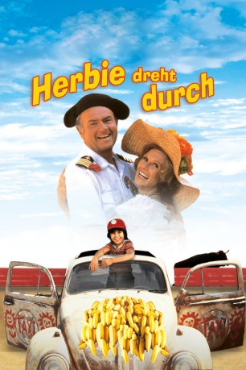
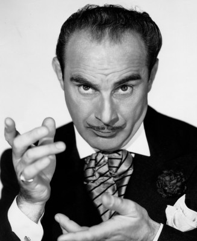

#5222 Herbie 4 - Dreht durch
Alternativ: Herbie Goes Bananas
 
 IMDB-Wertung: 4.8 / 10
IMDB-Wertung: 4.8 / 10  Metascore: 0
Metascore: 0 
Herbie, der flotte VW Käfer, ist dieses Mal in Südamerika unterwegs. Seine beiden neuen Rennfahrer D.J. und Pete wollen mit ihm beim Großen Preis von Rio de Janeiro antreten. Doch bereits bei der Anreise erleben die drei spannende Abenteuer. Letztendlich landen sie inmitten einer Stierkampf-Arena und Herbie muss als Torero gegen einen aufgebrachten Bullen antreten.
Jahr: 1980
Dauer: 88 Minuten
FSK: 6
Land: USA Studio: Buena Vista Distribution CompanyTonspuren:
Untertitel:
Auflösung: SD (560x416) Größe: 699 MB
Genre: Komödie, Abenteuer, Fantasy, Familie
Regisseur: Vincent McEveety
Drehbuch: Bozena Nemcová
Soundtrack:
Darsteller:
 Cloris Leachman als Aunt Louise
Cloris Leachman als Aunt Louise Charles Martin Smith als D.J.
Charles Martin Smith als D.J.- John Vernon als Prindle
- Elyssa Davalos als Melissa
- Joaquin Garay III als Paco
 Harvey Korman als Captain Blythe
Harvey Korman als Captain Blythe Richard Jaeckel als Shepard
Richard Jaeckel als Shepard Alex Rocco als Quinn
Alex Rocco als Quinn-  Fritz Feld als Chief Steward
 Vito Scotti als Armando Moccia
Vito Scotti als Armando Moccia- Iris Adrian als Loud American Wife
- Jack Perkins als Loud American
- Don Diamond als Local #2
- Warde Donovan als Maitre d'
 Buddy Joe Hooker als Chef
Buddy Joe Hooker als Chef Jeff Ramsey als The Matador
Jeff Ramsey als The Matador John Meier als Ship's Officer
John Meier als Ship's Officer Herbie als Itself , uncredited
Herbie als Itself , uncredited- Gloria O'Brien als (singing voice, uncredited
- Stephen W. Burns als Pete
- Jose Gonzales-Gonzales als Garage Owner
- Ruben Moreno als Store Owner
- Tina Menard als Store Owner's Wife
- Jorge Moreno als Bus Driver
- Allan Hunt als Canal Operator #1
- Tom Scott als Canal Operator #2
- Hector Morales als Mexican General
- Ceil Cabot als Mrs. Purkiss
- Pat Van Patten als Cigarette Guest
- Henry Slate als Off-Watch Officer
- Ernie Fuentes als Native
- Antonio Trevino als Pigeon Owner
- Dante D'Andre als Dr. De Moraes
- Alma Beltran als General's Wife
- Dolores Aguirre als General's Daughter #1
- Aurora Coria als General's Daughter #2
- Alex Tinne als Local #1
- Ray Victor als Guard Attendant
- Bert Santos als Policeman #3
- Steve Boyum als Panama Policeman
- Kenny Endoso als Mexican Policeman
- Mario Cisneros als Puerto Vallarta Policeman
- Alejandro Alemán als Kid in bus , uncredited
- Raúl Gómez als Jeep Driver , uncredited
Datei: X:\6-Hexalogie(A-Z)\Herbie\Herbie 4 - Dreht durch (1980, FSK6, 560x416).avi seit 02.01.2017
Festplatte: HD Collection-3(N-Z)-6(A-Z)
 Es gibt insgesamt 9 Filme in der Gruppe '6-Hexalogie(A-Z)\Herbie'
Es gibt insgesamt 9 Filme in der Gruppe '6-Hexalogie(A-Z)\Herbie'